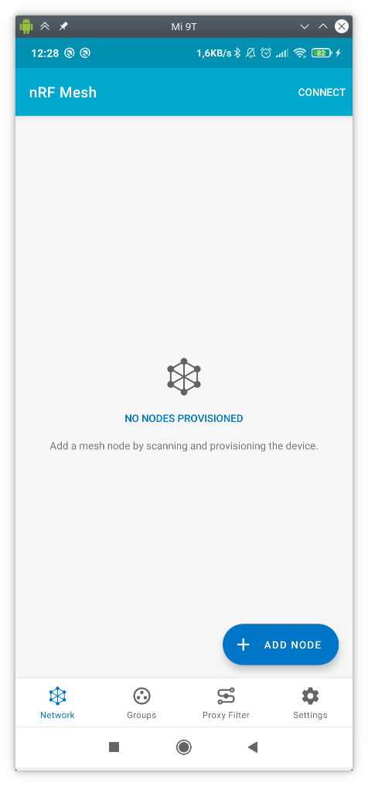
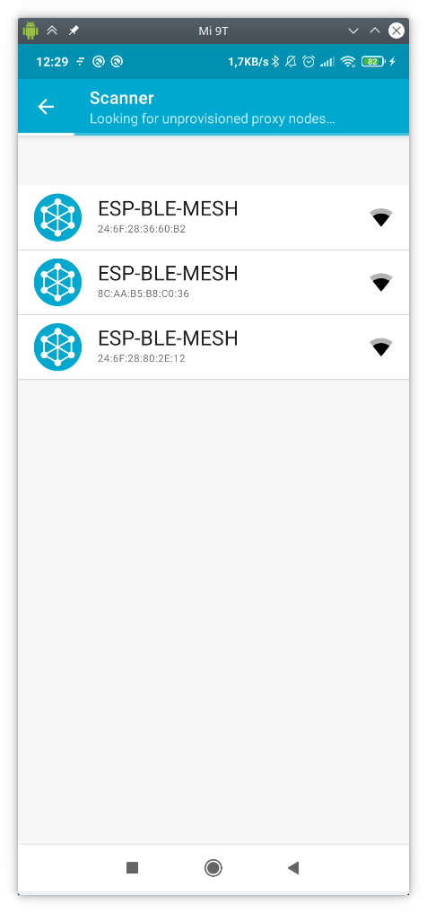
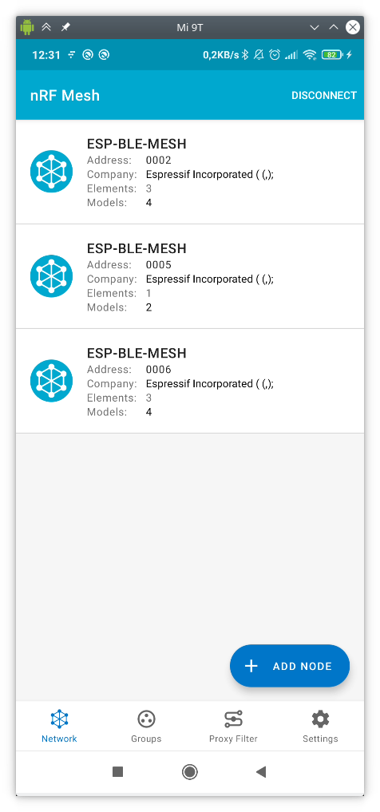
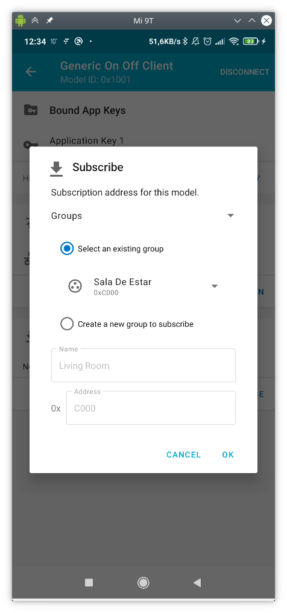
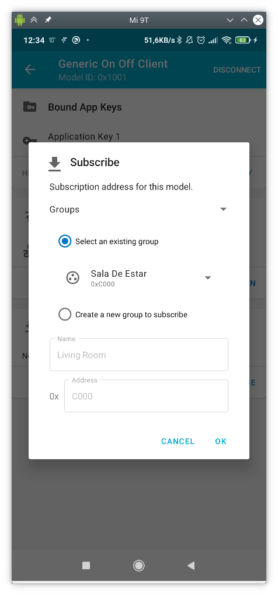

Práctica 4. Bluetooth Mesh (BLE MESH)
Objetivos
-
Poner en práctica los conceptos estudiados en teoría en relación a BLE MESH, específicamente provisionamiento y modelos cliente/servidor.
-
Desplegar una infraestructura de provisionamiento de un modelo ONOFF GENERIC SERVER con provisionamiento desde aplicación móvil para el control remoto de encendido/apagado LED.
-
Desplegar una infraestructura de provisionamiento de un modelo GENERIC SENSOR con provisionamiento desde ESP32.
Requisitos previos
En primer lugar, instala la última versión de ESP-IDF para el desarrollo de
esta práctica. Asegúrate de que, tras el clonado del repostitorio, realizas
la instalación de requisitos correspondiente, y de que exportas las
variables de entorno (vía export.sh) correctas. Es importante que te
asegures de la correcta configuración del entorno.
En segundo lugar, deberás rellenar la hoja Excel correspondiente a tu puesto con la dirección MAC Bluetooth de tu dispositivo, que podrás obtener con cualquier mecanismo que hayas utilizado en prácticas anteriores.
Los códigos que estudiaremos en la práctica se encuentran en el directorio
examples/bluetooth/esp_ble_mesh/ble_mesh_node en el caso del sistema
OnOff (primera parte de la práctica) y
ble_mesh_sensor_model en el caso del modelo sensor (segunda parte de
la práctica).
Por último, descarga e instala la aplicación (disponible para Android e IOS)
nRF Mesh.
Ejemplo para el modelo ON-OFF MODEL
El servidor ON-OFF
El servidor implementa un único elemento, en el cual se integran dos modelos distintos:
- Modelo Configuration Server, que implementa la configuración de claves de aplicación (AppKey), así como configuraciones genéricas del servidor como suscripciones, tamaño de TTL o funcionalidad de relay de mensajes.
- Modelo Generic OnOff Server, que implementa la funcionalidad básica de encendido/apagado de una luz.
El código en el fichero ble_mesh_demo_main.c contiene la funcionalidad
básica del servidor, que podemos resumir en:
- Inicialización de la pila BLE (bluedroid).
- Inicialización de la pila BLE Mesh.
- Registro de las funciones de callback para el proceso de provisionamiento y del modelo o modelos implementados.
- Implementación e inicialización del elemento BLE Mesh.
- Implementación e inicialización del modelo Configuration Server y Generic OnOff Server.
- Soporte para operaciones Get Opcode y Set Opcode en el modelo de configuración.
Análisis básico de código
-
Inicialización y activación de la pila BLE Mesh
Tras la inicialización del sistema, la tarea principal (app_main) se encarga de la incialización de las pilas BLE y BLE Mesh:
void app_main(void)
{
int err;
ESP_LOGI(TAG, "Initializing...");
board_init();
err = bluetooth_init();
if (err) {
ESP_LOGE(TAG, "esp32_bluetooth_init failed (err %d)", err);
return;
}
/* Initializes the Bluetooth Mesh Subsystem */
err = ble_mesh_init();
if (err) {
ESP_LOGE(TAG, "Bluetooth mesh init failed (err %d)", err);
}
}
En particular, el código incluye invocaciones a bluetooth_init() y
ble_mesh_init(), que se encargan de ambas inicializaciones.
La inicialización de la pila BLE Mesh requiere alguna explicación adicional:
static esp_err_t ble_mesh_init(void)
{
int err = 0;
memcpy(dev_uuid + 2, esp_bt_dev_get_address(), BLE_MESH_ADDR_LEN);
// See comment 1
esp_ble_mesh_register_prov_callback(esp_ble_mesh_prov_cb);
esp_ble_mesh_register_custom_model_callback(esp_ble_mesh_model_cb);
err = esp_ble_mesh_init(&provision, &composition);
if (err) {
ESP_LOGE(TAG, "Initializing mesh failed (err %d)", err);
return err;
}
esp_ble_mesh_node_prov_enable(ESP_BLE_MESH_PROV_ADV | ESP_BLE_MESH_PROV_GATT);
ESP_LOGI(TAG, "BLE Mesh Node initialized");
board_led_operation(LED_G, LED_ON);
return err;
}
Observa que el código incluye la siguiente funcionalidad:
-
esp_ble_mesh_register_prov_callback(esp_ble_mesh_prov_cb): registra la función de callback para la pila BLE Mesh. Esta función se ejecuta durante el proceso de configuración, y permite a la pila BLE Mesh generar eventos y notificar a la aplicación sobre hitos importantes en el proceso de configuración. Los eventos principales que pueden emitirse son:ESP_BLE_MESH_PROVISION_REG_EVT: generado cuando se completa el proceso de incialización de BLE Mesh.ESP_BLE_MESH_NODE_PROV_LINK_OPEN_EVT: generado cuando un provisionador y un dispositivo no provisionado establecen un enlace.ESP_BLE_MESH_NODE_PROV_LINK_CLOSE_EVT: generado para notificar a la aplicación que se ha roto un enlace con un dispositivo asociado.ESP_BLE_MESH_NODE_PROV_COMPLETE_EVT: recibido por la aplicación cuando el proceso de provisionamiento se completa.
-
esp_ble_mesh_register_custom_model_callback(esp_ble_mesh_model_cb): registra la función de callback asociada al modelo. Esta función se utiliza cuando el otro extremo de la comunicación solicita operaciones sobre el modelo, y es capaz de emitir los siguientes eventos principales:ESP_BLE_MESH_MODEL_OPERATION_EVT: se puede generar en dos situaciones:- El modelo servidor recibe un Get Status o Set Status desde un modelo cliente.
- El modelo cliente recibe un Status State desde un modelo servidor.
ESP_BLE_MESH_MODEL_SEND_COMP_EVT: generado después de que el modelo servidor envíe un Status State a través de la funciónesp_ble_mesh_server_model_send_msg.ESP_BLE_MESH_MODEL_PUBLISH_COMP_EVT: generado después de que la aplicación complete la invocación aesp_ble_mesh_model_publish_msgpara publicar mensajes.ESP_BLE_MESH_CLIENT_MODEL_SEND_TIMEOUT_EVT: generado cuando el modelo cliente invoca a la funciónesp_ble_mesh_client_model_send_msg, pero no recibe mensaje deACKde vuelta.ESP_BLE_MESH_MODEL_PUBLISH_UPDATE_EVT: generado después de que la aplicación configure la función de publicación para enviar de forma periódica mensajes al otro extremo.
-
esp_ble_mesh_node_prov_enable(ESP_BLE_MESH_PROV_ADV | ESP_BLE_MESH_PROV_GATT): activa el proceso de Anuncio y Escaneo, haciendo visible al dispositivo para potenciales provisionadores que estén a la escucha. -
board_led_operation(LED_G, LED_ON): inicializa un hipotético LED RGB, que se controlará remotamente.
En este punto, la inicialización de la pila BLE Mesh debería estar completa, por lo que un provisionador podría identificar dispositivos para privisonamiento de parámetros de red y transmisión de datos.
Implementación de la estructura BLE Mesh Element
A continuación, se detallan los pasos necesarios para, en el servidor:
- Completar la inicialización del sistema.
- Añadir un elemento y un modelo al servidor.
- Elegir distintas implementaciones de encriptación.
- Declarar las características de Proxy, Relay, Low Power y Friend del nodo.
En primer lugar, para declarar y definir un elemento y un modelo asociado, utilizaremos las siguientes estructuras:
/*!< Abstraction that describes a BLE Mesh Element.
This structure is associated with bt_mesh_elem in mesh_access.h */
typedef struct {
/* Element Address, it is assigned during provisioning. */
uint16_t element_addr;
/* Location Descriptor (GATT Bluetooth Namespace Descriptors) */
const uint16_t location;
/* Model count */
const uint8_t sig_model_count;
const uint8_t vnd_model_count;
/* Models */
esp_ble_mesh_model_t *sig_models;
esp_ble_mesh_model_t *vnd_models;
} esp_ble_mesh_elem_t;
Así, podemos mantener información sobre los elementos disponibles en el vector
elements:
static esp_ble_mesh_elem_t elements[] = {
ESP_BLE_MESH_ELEMENT(0, root_models, ESP_BLE_MESH_MODEL_NONE),
};
La implementación y definición de un modelo se realiza de forma similar:
static esp_err_t ble_mesh_init(void)
{
int err = 0;
memcpy(dev_uuid + 2, esp_bt_dev_get_address(), BLE_MESH_ADDR_LEN);
// See comment 1
esp_ble_mesh_register_prov_callback(esp_ble_mesh_prov_cb);
esp_ble_mesh_register_custom_model_callback(esp_ble_mesh_model_cb);
err = esp_ble_mesh_init(&provision, &composition);
if (err) {
ESP_LOGE(TAG, "Initializing mesh failed (err %d)", err);
return err;
}
esp_ble_mesh_node_prov_enable(ESP_BLE_MESH_PROV_ADV | ESP_BLE_MESH_PROV_GATT);
ESP_LOGI(TAG, "BLE Mesh Node initialized");
board_led_operation(LED_G, LED_ON);
return err;
}
Del mismo modo, podemos usar el array root_models para almacenar los modelos
creados:
static esp_ble_mesh_model_t root_models[] = {
ESP_BLE_MESH_MODEL_CFG_SRV(&config_server),
ESP_BLE_MESH_SIG_MODEL(ESP_BLE_MESH_MODEL_ID_GEN_ONOFF_SRV, onoff_op,
&onoff_pub, &led_state[0]),
};
Distintos modelos requieren diferentes macros (en este caso, ya que vamos
a implementar un modelo Generic OnOff Server, hemos utilizado
ESP_BLE_MESH_MODEL_ID_GEN_ONOFF_SRV).
Otra estructura importante en un modelo son los punteros
esp_ble_mesh_model_op_t *op. Estas estructuras apuntan a la estrcutura de
operación que define el estado del modelo. Generalmente, hay dos tipos
de modelos en BLE Mesh:
- Modelo servidor:
- Consiste en uno o varios estados que pueden existir y abarcar varios elementos.
- Define los mensajes enviados/recibidos por el modelo, junto con el comportamiento del elemento. Por ejemplo, un cambio entre On y Off en un interruptor indica el estado de On/Off en el modelo.
- Modelo cliente:
- Define los mensajes usados por el cliente para solicitar, modificar o usar el estado del servidor. Por ejemplo, un cambio entre un On y Off en un interruptor (cliente) indica el mensaje de On/Off enviado por el cliente.
El siguiente código muestra la declaración de la estructura operación asociada al Modelo del servidor:
/*!< Model operation context.
This structure is associated with bt_mesh_model_op in mesh_access.h */
typedef struct {
const uint32_t opcode; /* Opcode encoded with the ESP_BLE_MESH_MODEL_OP_* macro */
const size_t min_len; /* Minimum required message length */
esp_ble_mesh_cb_t param_cb; /* The callback is only used for the BLE Mesh stack, not for the app layer. */
} esp_ble_mesh_model_op_t;
Existe tres variables en la declaración:
opcode: código de operación asociado al estado.min_len: tamaño mínimo de los mensajes recibidos por el estado. Por ejemplo, para OnOff Get State, el tamaño es 0 (estamos leyendo), mientras que en el caso de OnOff Set State, el tamaño es 2 (incluye el valor a escribir).param_cb: parámetro interno utilizado por la pila BLE Mesh, típicamente inicializado a 0.
Así, la definición en el servidor quedaría:
static esp_ble_mesh_model_op_t onoff_op[] = {
{ ESP_BLE_MESH_MODEL_OP_GEN_ONOFF_GET, 0, 0},
{ ESP_BLE_MESH_MODEL_OP_GEN_ONOFF_SET, 2, 0},
{ ESP_BLE_MESH_MODEL_OP_GEN_ONOFF_SET_UNACK, 2, 0},
/* Each model operation struct array must use this terminator
* as the end tag of the operation uint. */
ESP_BLE_MESH_MODEL_OP_END,
};
El cliente ON-OFF
El cliente resulta mucho más sencillo en su funcionamiento. De forma genérica, simplemente define un modelo Client ON/OFF y espera a ser provisionado. Una vez completado el proceso de provisionamento, espera a la pulsación de uno de los botones en la placa (RESET) para el envío a todos los nodos en la misma red de una solicitud de modificación en el estado de activación de las luces.
Concretamente, nos interesan las siguientes definiciones. En el fichero
board.c, observa la respusta a la pulsación del botón:
static void button_tap_cb(void* arg)
{
ESP_LOGI(TAG, "tap cb (%s)", (char *)arg);
example_ble_mesh_send_gen_onoff_set();
}
static void board_button_init(void)
{
button_handle_t btn_handle = iot_button_create(BUTTON_IO_NUM, BUTTON_ACTIVE_LEVEL);
if (btn_handle) {
iot_button_set_evt_cb(btn_handle, BUTTON_CB_RELEASE, button_tap_cb, "RELEASE");
}
}
void board_init(void)
{
board_led_init();
board_button_init();
}
La función invocada, example_ble_mesh_send_gen_onoff_set, realiza el envío
de una operación de tipo SET a todos los miembros de la red:
void example_ble_mesh_send_gen_onoff_set(void)
{
esp_ble_mesh_generic_client_set_state_t set = {0};
esp_ble_mesh_client_common_param_t common = {0};
esp_err_t err = ESP_OK;
common.opcode = ESP_BLE_MESH_MODEL_OP_GEN_ONOFF_SET_UNACK;
common.model = onoff_client.model;
common.ctx.net_idx = store.net_idx;
common.ctx.app_idx = store.app_idx;
common.ctx.addr = 0xFFFF; /* to all nodes */
common.ctx.send_ttl = 3;
common.ctx.send_rel = false;
common.msg_timeout = 0; /* 0 indicates that timeout value from menuconfig will be used */
common.msg_role = ROLE_NODE;
set.onoff_set.op_en = false;
set.onoff_set.onoff = store.onoff;
set.onoff_set.tid = store.tid++;
err = esp_ble_mesh_generic_client_set_state(&common, &set);
if (err) {
ESP_LOGE(TAG, "Send Generic OnOff Set Unack failed");
return;
}
store.onoff = !store.onoff;
mesh_example_info_store(); /* Store proper mesh example info */
}
Observa cómo el mensaje se enviará a todos los nodos de la red (common.ctx.addr = 0xFFFF;).
Provisionamiento y control desde una aplicación móvil
En primer lugar, nos dividiremos en grupos de 3-4 personas. Uno de vosotros, utilizando la aplicación móvil nRF Mesh, actuará como provisionador de la red, proporcionando claves de red y aplicación, así como información básica de red (por ejemplo, direcciones unicast). Además, podrá crear grupos y suscribir/desuscribir modelos a dichos grupos.
Además, se requiere que uno de vuestros ESP32 actúe como cliente, y el resto como servidores. Así, emularemos una sala con múltiples luces, y un sólo interruptor que controlará su estado de encendido/apagado.
- PASO 1: en la pantalla inicial se nos mostrarán los nodos ya provisionados. En nuestro caso, inicialmente ninguno.

- PASO 2: pincharemos sobre ADD NODE, y provisionaremos, uno a uno, todos los nodos que deseemos que formen parte de nuestra red (sólo aquellos que forman parte de tu grupo de compañeros):

- PASO 3: antes de provisionar, generamos información de red para el nuevo nodo (lo identificamos), presionando en IDENTIFY:

- PASO 4: una vez generada la información de red, provisionamos el nodo (PROVISION):

- PASO 5: si todo ha ido bien, se nos mostrará un mensaje de éxito como el siguiente:

- PASO 6: tras repetir este paso con todos los nodos de nuestro grupo, veremos una pantalla como la siguiente. Observa y anota las direcciones unicast de cada nodo. Los nodos con un elemento son el cliente OnOff; los nodos con tres elementos (sólo usaremos el primero) son los servidores OnOff:

A continuación, generarás un grupo de nodos. Esto nos permitirá suscribir a modelos al mismo, y publicar mensajes que se transmitirán a todos los modelos del grupo.
- PASO 7: crea un nuevo grupo pulsando el botón
+. Dale el nombre y la dirección que desees, por ejemplo, Sala de Estar,0xC000. Si todo ha ido bien, se especificará que en el único grupo disponible no hay ningún dispositivo suscrito/asociado.

A continuación, suscribiremos a cada modelo de los servidores y clientes (de tipo Generic On Off Server y Generic On Off Client) al grupo creado. Esto lo harás nodo a nodo, en primer lugar pincando en el modelo concreto:

Y a continuación asociando una clave de aplicación (BIND KEY) y suscribiendo (SUBSCRIBE) al grupo deseado:

 

Ahora, si vuelves a la descripción del grupo, verás que, tras pinchar, observas dos luces (o una por servidor) y un interruptor (correspondiente al cliente):

En este punto, si estás monitorizando la salida de todos los ESP32, verás que el estado del LED cambia a petición de la aplicación. Además, verás que también cambia si presionas el botón correspondiente del interruptor (RESET) en la placa.
Tarea entregable
El cliente envía, tras presionar un botón, el mensaje de tipo SET a todos los nodos de la red. Modifícalo
para que únicamente se envíe a los pertenecientes a tu grupo. Prueba a suscribir/desuscribir un modelo del
grupo, y verás como ya no recibe los mensajes de solicitud de modificación de estado.
Ejemplo para el modelo SENSOR MODEL
En este ejemplo, se implementa la creación de un cliente de modelo sensor que, además, es provisionador, y un servidor de modelo sensor configurable.
El modelo Sensor Server es un modelo que permite exponer series de datos de sensorización. El modelo Sensor Client se usa para consumir valores de sensorización (Sensor states) expuestos por el servidor.
Estos estados se componen de las siguientes partes:
- Estado Sensor Descriptor. Describe los datos del sensor, y es inmutable durante su vida.
- Estado Sensor Setting. Controla los parámetros del sensor. Por ejemplo, podría indicar su sensibilidad, y podría ser ajustado remotamente para prevenir que un sensor de movimiento se disparase ante pequeños movimientos.
- Estado Sensor Cadence. Controla la cadencia de sensorización.
- Estado Sensor Data. Contiene los valores de sensorización. Realmente, representa uno o más pares Property ID-Valor.
- Estado Sensor Series Column. Sólo utilizado si se considera cada uno de los valores como perteneciente a una serie de datos.
En el ejemplo client, el dispositivo es a la vez un provisionador y un cliente. Una vez el dispositivo servidor es provisionado y configurado, los usuarios pueden presionar el botón de la placa para enviar al servidor peticiones que, sucesivamente, devolverán el siguiente estado del sensor en orden (Descriptor, Setting, Cadence, ...).
En el ejemplo server, el dispositivo no provisonado implementa un modelo Sensor Server. El servidor soporta dos instancias de estados: la pimrea (Property ID 0x0056) representaría la temperatura Indoor; la segunda (Property ID 0x005B ) representaría la temperatura Outdoor*. Todos los datos, en estos ejemplos, están preinicializados.
Puesta en marcha
En primer lugar, arranca en tu grupo un nodo cliente/provisionador, y monitoriza su salida. Cuando un compañero/a arranque un nodo servidor, verás que es provisionado por tu cliente, otorgándole una dirección unicast. Anótala.
El funcionamiento general del sistema es:
- El dispositivo A ejecuta el ejemplo client, y el dispositivo B ejecuta el ejemplo server.
- A actúa como provisionador. Tras recibir una petición por parte de B, lo provisiona y almacena su dirección. Observarás la MAC BLE (UUID) de B en el proceso de provisionamiento desde A.
- En A, cada pulsación del botón supondrá una petición al nodo B.
- Sucesivamente, estas peticiones serán, en orden y por cada pulsación:
- Sensor Descriptor.
- Sensor Cadence.
- Sensor Settings.
- Sensor Data.
- Sensor Series.
Tarea
Estudia el código del cliente y del servidor, y observa a qué nodo se envían las peticiones desde el cliente, qué operaciones se solicitan en cada pulsación de botón, y qué datos devuelve el servidor en cada caso.
Tarea entregable
Modifica el código de cliente y/o servidor para que los valores de sensorización que se consulten en cada pulsación del botón no sean todos los del modelo del último nodo provisonado, como ahora se hace, sino únicamente los datos de sensorización (Sensor Data State) de todos los nodos provisionados. Así, si hay tres nodos provisionados, cada pulsación nos devolverá el valor de sensorización de uno de ellos, por orden de provisionamiento. Como funcionalidad adicional, sólo se provisionará automáticamente a aquellos nodos autorizados (los que pertenecen a tu sala, por ejemplo). Por último, opcionalmente, se pide que el valor sensorizado varíe aleatoriamente de forma periódica en el servidor, con una cadencia predeterminada (la modificación remota de la cadencia queda como ejercicio avanzado).